18.1. Introduction
The Chebfun project began in 2003, and Chebfun2, for 2D functions, was released in 2013 [Townsend & Trefethen 2013b]. Chebfun3, for 3D functions, was created by Behnam Hashemi three years later [Hashemi & Trefethen 2017].
Chebfun3 aims to compute with functions in a 3D box $[a,b]\times[c,d]\times [e,g]$, which by default is the cube $[-1,1]^3$. Our aim in creating it has been to make it analogous to Chebfun2 wherever possible, but of course, there are some differences in capabilities and in underlying algorithms and representations. Like Chebfun2, Chebfun3 can carry out a wide range of computations on functions and in particular is good at integration, differentiation, and computation of minima and maxima.
For a simple starting example, here is a 3D Runge function.
f = chebfun3(@(x,y,z) 1./(1+x.^2+y.^2+z.^2));
(Another way to construct $f$ would be to execute cheb.xyz to make chebfun3 objects for $x$, $y$, and $z$, and then set f = 1./(1+x.^2+y.^2+z.^2). Another would be to type f = chebfun3('1./(1+x.^2+y.^2+z.^2)'). Yet another would be to type f = cheb.gallery3('runge').) At $(0, 0.5, 0.5)$, $f$ takes the value $2/3$:
format long, f(0, 0.5, 0.5)
ans = 0.666666666666666
The triple integral over the whole cube is computed by sum3,
sum3(f)
ans = 4.286854062301838
The exact result is $4.28685406230184188268\dots.$
Since the volume of the cube is $8$, the mean value is $1/8$ of this result:
mean3(f)
ans = 0.535856757787730
The maximum value is $1$:
max3(f)
ans = 1.000000000000000
One of the main Chebfun3 plotting commands is slice, which by default shows the function on various slices in the three directions. Note the sliders enabling users to adjust slice positions interactively.
slice(f)
Couldn't create JOGL canvas--using painters Couldn't create JOGL canvas--using painters
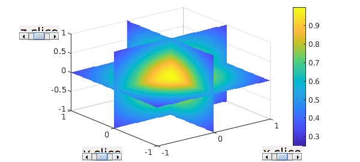
Another plotting capability is isosurface which, by default, plots an isosurfaces with a slider.
clf, isosurface(f), axis equal
Couldn't create JOGL canvas--using painters Couldn't create JOGL canvas--using painters Couldn't create JOGL canvas--using painters
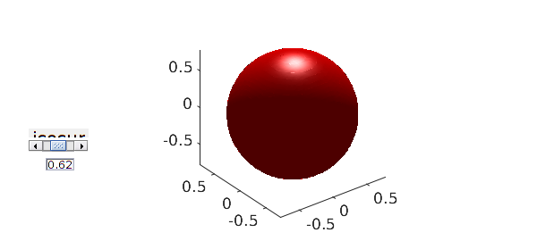
The full set of Chebfun3 plotting commands is slice, isosurface, plot, scan and surf.
So far, there are about 100 methods that can be applied to chebfun3 objects. For a complete list type methods chebfun3. (By the way, notice that in print we use the plural form "chebfun3 objects", because the expression "chebfun3s" could be confusing, though informally in conversation we may speak of "chebfun3's".)
18.2. Anatomy of a chebfun3
First, a quick reminder. In 1D, Chebfun represents functions by polynomials and piecewise polynomials, all derived via interpolation in Chebyshev points. In 2D, Chebfun2 does not have piecewise representations, only global ones. These are constructed in a low-rank fashion: a function $f(x,y)$ is approximated by functions of rank $1,2,3,\dots$ until approximately 16-digit precision is achieved [Townsend & Trefethen 2013b]. Each rank 1 piece in this representation is an outer product $d c(y) r(x)$, where $d$ is a scalar, and the univariate functions $c$ and $r$ are represented as chebfuns. At each step of the increasing-rank process, the "pivot location" in the domain rectangle that determines the choice of $c$ and $r$ is determined by an approximation to the largest remaining function value in the rectangle. This is analogous to an approximate form of complete pivoting in Gaussian elimination for the representation of a matrix via ranks $1,2,3,\dots$ [Townsend & Trefethen 2013a].
There is no unique generalization of this 2D idea to 3D or higher dimensions. On the contrary, there are at least half a dozen ideas in the literature. (This "literature" is mostly about discrete tensors rather than multivariate functions [Bebendorf 2011], but one paper about functions worthy of note is [Gorodetsky, Karaman and Marzouk 2019].) Thus we faced some fundamental decisions in the design of Chebfun3, and along the way we explored a number of different possibilities, ranging from a straightforward 3D tensor product to various compressed-rank representations.
Chebfun3 represents functions in the Tucker format, which means that $f(x,y,z)$ is written as a 3D product involving an $\infty\times r_1$ quasimatrix $c$ ("columns") in the $x$ direction, an $\infty\times r_2$ quasimatrix $r$ ("rows") in the $y$ direction, and an $\infty\times r_3$ quasimatrix $t$ ("tubes") in the $z$ direction. Here $r_1, r_2, r_3$ are positive integers whose size might typically be 10 or 50 for the functions that Chebfun3 can efficiently represent. These three quasimatrices are combined in a product with coefficients specified by an $r_1\times r_2\times r_3$ core tensor called core. In short, we write: $$ f(x,y,z) \approx core \times_1 c(x) \times_2 r(y) \times_3 t(z), $$ or more fully: $$ f(x,y,z) \approx \sum_{i=1}^{r_1} \sum_{j=1}^{r_2} \sum_{k=1}^{r_3} core(i,j,k) c_i(x) r_j(y) t_k(z). $$
We can get some information about the Tucker representation of our 3D Runge function $f$ by typing f without a semicolon:
f
f = chebfun3 object cols: Inf x 10 chebfun rows: Inf x 10 chebfun tubes: Inf x 10 chebfun core: 10 x 10 x 10 length: 43, 43, 43 domain: [-1, 1] x [-1, 1] x [-1, 1] vertical scale = 1
Let's look at a few even simpler examples. Suppose that $f$ happens to depend only on $x$, like this:
f = chebfun3(@(x,y,z) exp(x))
f = chebfun3 object cols: Inf x 1 chebfun rows: Inf x 1 chebfun tubes: Inf x 1 chebfun core: 1 x 1 x 1 length: 15, 1, 1 domain: [-1, 1] x [-1, 1] x [-1, 1] vertical scale = 2.7
From this output we see that $f$ has rank 1 in some sense. The word "rank" has no unique definition for 3D representations; in Chebfun3, it is the largest dimension of the core tensor. In this case the core tensor only needs to be a $1\times 1\times 1$ scalar, and the same would apply for any function that depends on just one of $x$, $y$, and $z$. The "length" field of the output tells us what degree polynomial is used to capture the dependencies in the three directions; this information can also be obtained by calling the length method:
[m, n, p] = length(f)
m =
15
n =
1
p =
1
Here is what it looks like if the function is $\exp(y)$ instead of $\exp(x)$:
[m, n, p] = length(chebfun3(@(x,y,z) exp(y)))
m =
1
n =
15
p =
1
These results compare in the expected way with the 1D standard chebfun of $\exp(x)$.
length(chebfun(@(x) exp(x)))
ans =
15
To see a little more of the structure of a chebfun3, let us cook up an example with 2 columns, 2 rows, and 2 tubes. Here is such a function:
f = chebfun3(@(x,y,z) exp(x).*(log(2+y).*exp(z))+sin(y)/1e6)
f = chebfun3 object cols: Inf x 2 chebfun rows: Inf x 2 chebfun tubes: Inf x 2 chebfun core: 2 x 2 x 2 length: 15, 27, 15 domain: [-1, 1] x [-1, 1] x [-1, 1] vertical scale = 8.1
The representation of $f$ involves an $2\times 2\times 2$ core tensor, an $\infty\times 2$ quasimatrix for the $x$ direction, and also $\infty\times 2$ quasimatrices for the $y$ and $z$ directions. Here is the core tensor:
format short, f.core
ans(:,:,1) =
0.0000 0.0000
-0.0000 33.7924
ans(:,:,2) =
1.0e+08 *
-0.0000 0.0000
0.0000 1.5384
Here are plots of the coefficients of the three quasimatrices:
clf, plotcoeffs(f, '.-')
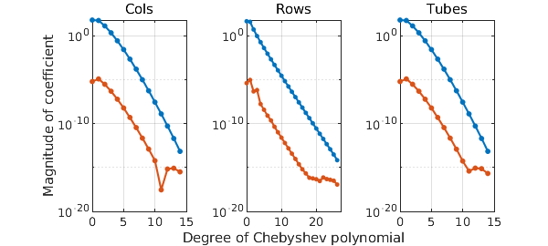
These explorations give an idea of what a chebfun3 looks like. However, they don't explain how the system constructs such an object. We will not give details here; see [Dolgov, Kressner, and Strössner 2021] for the current algorithm and [Hashemi & Trefethen 2017] for the original one, which can be invoked by calling the chebfun3 constructor with the flag 'classic'.
18.3. Computing with chebfun3 objects
Of course, Chebfun is all about computing with functions, not just representing them. For example, here are two 3D functions:
f = chebfun3(@(x,y,z) sin(x+y.*z)); g = chebfun3(@(x,y,z) cos(15*exp(z))./(5+x.^3+2*y.^2+z));
Here are the maxima of $f$, $g$, and $fg$:
format long max3(f) max3(g) max3(f.*g)
ans =
1
ans =
0.319924161452828
ans =
0.245859621598817
Of course, one can find the location as well as the value of an extremum:
[maxval, maxpos] = max3(f+g)
maxval = 1.170942561020256 maxpos = 0.954987700670008 -0.603362934924681 -0.882108101984976
Here is the integral over the cube of $f\exp(g)$:
sum3(f.*exp(g))
ans = -0.009190066018142
If we execute just sum, it integrates over just one dimension, by default $x$, so the output is a 2D function, i.e., a chebfun2:
close all, contourf(sum(f),20), colorbar
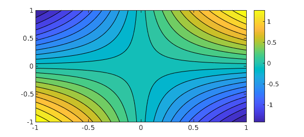
There is also a sum2 command for integration over two dimensions, by default $x$ and $y$, giving as output a 1D function, i.e., a chebfun:
plot(sum2(exp(g+2*f)))
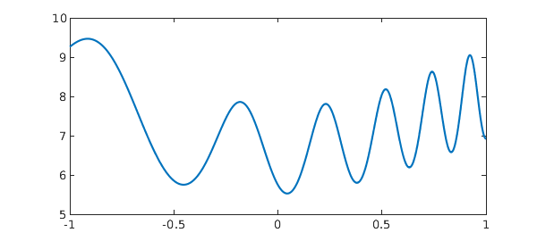
Here is a line integral over a 3D spiral.
curve = chebfun(@(t) [cos(t) sin(t) t/(8*pi)], [0, 8*pi]);
close all, plot3(curve(:,1), curve(:,2), curve(:,3) ), title('Helix')
f = chebfun3(@(x,y,z) x+y.*z);
I = integral(f, curve)
exact = -sqrt(1+(8*pi)^2)/(8*pi)
I = -1.000791258702030 exact = -1.000791258702039
18.4. Getting inside a chebfun3
Suppose $f$ is a chebfun3. We can examine its columns, rows, and tubes by executing f.cols, f.rows, and f.tubes. For example, let us look at the columns associated with the chebfun3 $g$ just considered. This is a quasimatrix with 8 columns:
size(g.cols)
ans = Inf 8
Here is a plot of the columns:
plot(g.cols)
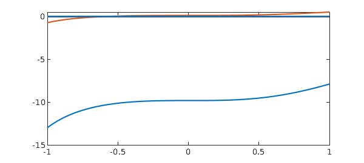
The tubes are more interesting (also the rows):
plot(g.tubes)
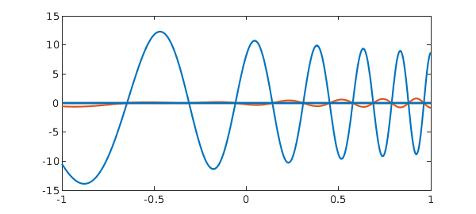
A plot of the coefficients of $g$ (all three sets, with respect to $x$, $y$, and $z$) looks like this.
plotcoeffs(g,'.-')
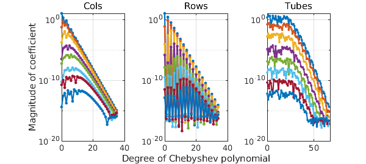
We can look at the coefficients of just, say, the columns like this:
clf, plotcoeffs(g.cols,'.-')
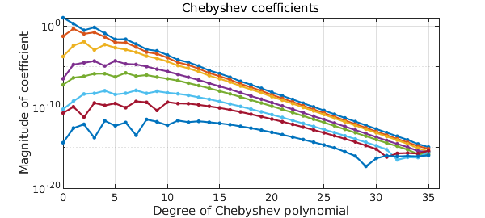
18.5. Periodic chebfun3 objects
Chebfun3 can use trigonometric functions instead of polynomials for representing smooth functions which are triply periodic. (So far, we have no capabilities for functions that are periodic in just one or two dimensions.) To create a trig-based chebfun3 object, we can use the 'trig' (or 'periodic') flag in the Chebfun3 constructor. For example, the function $f(x,y,z) = \tanh(3\sin x) - \sin(y+1/2) + \cos(6z)$ on $[-\pi, \pi]^3$ can be constructed as follows:
ff = @(x,y,z) tanh(3*sin(x))-(sin(y+1/2)).^2+cos(6*z); dom = [-pi pi -pi pi -pi pi]; f = chebfun3(ff, dom, 'trig')
f = chebfun3 object (trig) cols: Inf x 2 chebfun rows: Inf x 2 chebfun tubes: Inf x 2 chebfun core: 2 x 2 x 2 length: 143, 5, 13 domain: [-3.14, 3.14] x [-3.14, 3.14] x [-3.14, 3.14] vertical scale = 3
Note the text 'trig' in the display. Here is the length of $f$ and a plot of its coefficients:
[m, n, p] = length(f) plotcoeffs(f, '.-')
m =
143
n =
5
p =
13

As we see, $f$ is resolved to machine precision using trigonometric interpolants through very different numbers of points in the three directions. The corresponding degrees of the trigonometric polynomials needed to resolve this function are accordingly these:
xdeg = (m-1)/2 ydeg = (n-1)/2 zdeg = (p-1)/2
xdeg =
71
ydeg =
2
zdeg =
6
Let's compare with the length of $f$ if we ignore its periodicity:
fCheb = chebfun3(ff, dom); [m_fCheb, n_fCheb, p_fCheb] = length(fCheb)
m_fCheb =
226
n_fCheb =
28
p_fCheb =
49
As expected, a smooth periodic function can be represented with trigfun factor quasimatrices using fewer samples than standard chebfun factor quasimatrices.
18.6. Derivative and Laplacian
Like Chebfun and Chebfun2, Chebfun3 is good at calculus, having commands diffx, diffy, diffz, and lap (or laplacian). There is also a general command diff that can take appropriate arguments to specify dimensions.
For example, the following is a harmonic function:
f = chebfun3(@(x,y,z) 1./sqrt(x.^2 + y.^2 + (2-z).^2));
So its Laplacian will be zero:
Lf = lap(f); rng(1) Lf(rand(3,1), rand(3,1), rand(3,1))
ans =
0
0
0
Let's compare the Laplacian of $f$ with the divergence of its gradient, which will be discussed in the next subsection.
norm(Lf - div(grad(f)))
ans =
0
18.7. 3D vector fields
Consider a vector-valued function of three variables like $$ F(x,y,z) = (f(x,y,z); g(x,y,z); h(x,y,z)). $$ We can represent such functions using chebfun3v. Similarly to chebfun2v, we can construct a chebfun3v object either by explicitly calling the constructor or by vertical concatenation of chebfun3 objects. We already hinted at this by using grad(f) in the last subsection. Let's check its size:
size(grad(f))
ans =
3 Inf Inf Inf
Chebfun can plot 3D vector fields using the quiver3 command, which draws a field of arrows. For example, here is a quiver3 plot of the vector field $F(x,y,z) = -yi + xj + zk$.
cheb.xyz F = [-y; x; z]; close all, quiver3(F, 0) view([2 2 40])
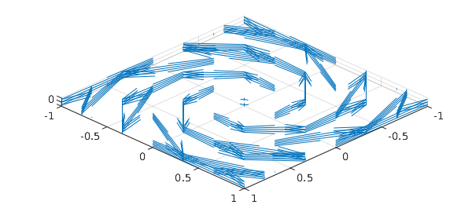
The 0 in the quiver3 command tells MATLAB not to rescale the vectors.
According to the fundamental theorem of calculus for line integrals, also known as the gradient theorem, the line integral of a gradient vector field along a smooth curve depends only on the endpoints.
f = chebfun3(@(x,y,z) sin(x+20*y+z.^2).*exp(-(3+y.^2)), ...
[-5*pi, 5*pi, -5*pi, 5*pi, -5*pi, 5*pi]);
F = grad(f);
curve = chebfun(@(t) [t.*cos(t) t.*sin(t) t], [0, 5*pi]);
plot3(curve(:,1), curve(:,2), curve(:,3),'b'),
title('Conical spiral'), shg
I_spiral = integral(F, curve)
ends = f(5*pi*cos(5*pi), 5*pi*sin(5*pi), 5*pi) - f(0, 0, 0)
I_spiral = -0.049398074616857 ends = -0.049398074616858
We can determine if a given vector field is conservative using curl:
norm(curl(F))
ans =
0
It is also well-known that the line integral of a conservative vector field is independent of path. Let's compare the numerical values of the line integrals of our vector field over two paths with the same endpoints:
curve2 = chebfun(@(t) [t*cos(5*pi) t*sin(5*pi) t], [0, 5*pi]); hold on, plot3(curve2(:,1), curve2(:,2), curve2(:,3),'r'), hold off, shg I_line = integral(F,curve2), error = I_line - I_spiral
I_line =
-0.049398074616895
error =
-3.749778265671466e-14
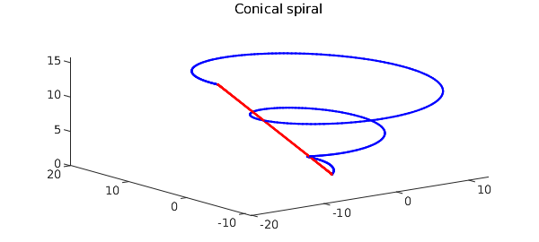
18.8. Higher-order SVD
The higher-order SVD (HOSVD) of a discrete tensor was introduced in [De Lathauwer, De Moor & Vandewalle 2000]. For an order-3 tensor, this notion uses SVDs of the three modal unfolding matrices to compute a factorization involving a core tensor with the three matrices of left singular vectors of the unfolded tensor. Chebfun3 contains a continuous analogue of the HOSVD. Here is an example:
f = chebfun3(@(x,y,z) sin(x+2*y+3*z)); [sv, S_core, S_cols, S_rows, S_tubes] = hosvd(f);
sv is a cell array containing modal singular values of $f$:
sv1 = sv{1}
sv2 = sv{2}
sv3 = sv{3}
sv1 = 1.698135391441130 1.048957901152853 sv2 = 1.525792971461290 1.286830328479728 sv3 = 1.439058506117110 1.383143919492079
We see the decay in each set of modal singular values analogous to the decay of singular values of bivariate functions. Also, the columns of the three factor quasimatrices S_cols, S_rows, and S_tubes are orthonormal. For example, the departure from orthogonality in the columns of the quasimatrix S_cols is:
norm(eye(size(S_cols,2)) - S_cols'*S_cols)
ans =
6.904446434084077e-16
Moreover, the core tensor S is all orthogonal, i.e., its horizontal slices are orthogonal:
norm(squeeze(S_core(1,:,:) .* S_core(2,:,:)))
ans =
9.196292782337944e-15
Its lateral slices are orthogonal:
norm(squeeze(S_core(:,1,:) .* S_core(:,2,:)))
ans =
1.095842372777122e-14
And also its frontal slices are orthogonal:
norm(S_core(:,:,1) .* S_core(:,:,2))
ans =
1.121596307397203e-14
18.9. Rootfinding
Rootfinding in Chebfun3 is still under development. What follows describes the code root, which attempts to find just one single root of a chebfun3v or equivalently of three chebfun3 objects.
One usually expects three 3D functions to have a finite number of common roots, though it is possible that such a system of equations would have an infinite number of roots. Given $f$, $g$, and $h$, rootfinding in Chebfun3 is done by the following two steps. In step 1, an initial guess is computed from the tensor of values of the chebfun3 object $objFun:= f^2 + g^2 + h^2$. This gives us a root with roughly 3 accurate digits. Step2 then attempts to improve the accuracy to machine precision using a few Newton iterations. (More research is needed here!) Here is an example:
f = chebfun3(@(x,y,z) y-x.^2); g = chebfun3(@(x,y,z) z-x.^3); h = chebfun3(@(x,y,z) cos(exp(x.*sin(-2+y+z))));
The intersection of the zero level surfaces of the first two functions $f$ and $g$ is a twisted cubic, which is an interesting curve described in many textbooks on algebraic geometry. See e.g., [Cox, Little & O'Shea 2015].
close all, isosurface(f, 0, 'g') hold on, isosurface(g, 0, 'b') view([-2,5,5])
Let us compute the only common root of $f$, $g$ and $h$ in the default cube:
r = root(f, g, h)
r = -0.474327609954061 0.224986681564732 -0.106717394938095
The root is accurate to machine epsilon:
format short res1 = f(r(1), r(2), r(3)) res2 = g(r(1), r(2), r(3)) res3 = h(r(1), r(2), r(3))
res1 =
2.1273e-16
res2 =
0
res3 =
1.5706e-16
Here is a plot of all the three zero level surfaces together with the common root we just found:
isosurface(h, 0, 'r') plot3(r(1), r(2), r(3), 'yh', 'markersize', 30) view([-8,8,5]), alpha(0.9)
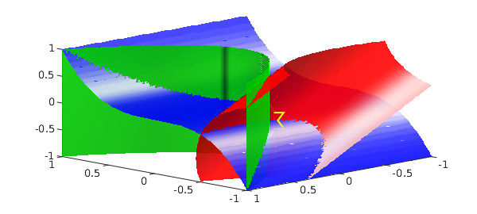
18.10. Changing the accuracy with chebfun3eps
Chebfun has always had a parameter that describes its target relative accuracy which since 2015 has been called chebfuneps. For 1D computations, we do not recommend that users normally change this parameter from its factory value of machine precision (unless dealing with noisy functions), because the speedups to be obtained are usually not very large. See section 8.8 of this Guide and also the FAQ collection at www.chebfun.org.
In two dimensions, and even more in three dimensions, the potential gains from loosening the tolerance become much greater. Many users of Chebfun3 may find, for example, that they want to work with 10 digits of accuracy rather than 16 -- the speedup in many cases is on the order of a factor of 10. For this reason, Chebfun allows users to set different tolerances chebfuneps, chebfun2eps, and chebfun3eps for computations in 1D, 2D and 3D. The factory values of these parameters are all machine epsilon.
To illustrate the speedups, here we compute chebfun3 objects for a Runge function at four different accuracies. We caution users that the actual accuracy achieved may be a digit or two less than requested.
disp(' eps time rank m-length n-length p-length')
ff = @(x,y,z)1./(0.01+x.^2+y.^2+z.^2);
for ep = 10.^(-16:4:-4)
f = chebfun3(ff,'eps', ep);
tic, f = chebfun3(ff,'eps', ep); t = toc;
r = rank(f);
[m,n,p] = length(f);
fprintf('%8.1e %6.4f %7d %7d %7d %7d\n', ep,t,r,m,n,p)
end
eps time rank m-length n-length p-length 1.0e-16 0.3242 19 383 383 383 1.0e-12 0.2167 14 281 281 281 1.0e-08 0.0584 8 177 177 177 1.0e-04 0.0222 2 65 65 65
As the above example indicates, one way to control the accuracy of a chebfun3 construction is by explicitly specifying eps in a call to the constructor. Alternatively -- and necessarily, if you are doing follow-on operations on previously constructed chebfun3 objects -- you can change the parameter globally as described in Chapter 8. For example, let us check the speed and accuracy of a certain computation using the factory value of chebfun3eps, i.e., machine precision. It runs slowly, and gives high accuracy:
ff = @(x,y,z) tanh(2*(x+y+z)); tic f = chebfun3(ff); g = cos(f+1).^2; error = abs(g(.5,.6,.7) - cos(ff(.5,.6,.7)+1)^2) toc
error = 9.9920e-16 Elapsed time is 1.260131 seconds.
Now let us set chebfun3eps to 1e-10 and run the same computation. Faster and less accurate!
chebfun3eps 1e-10 tic f = chebfun3(ff); g = cos(f+1).^2; error = abs(g(.5, .6, .7) - cos(ff(.5, .6, .7)+1)^2) toc
error = 5.9746e-09 Elapsed time is 0.458695 seconds.
The following command reverts chebfun3eps to the factory value:
chebfun3eps factory
18.11. Chebfun3t for pure tensor product comparisons
Chebfun3, like Chebfun2 before it, exploits low-rank compression of functions where possible. The question of how much one gains from this on average is controversial and certainly unresolved [Trefethen 2017]. One can construct examples where the gain is as large as you like, and other examples where there is no gain at all (and indeed where the low-rank algorithms take longer).
To enable interested users to explore these tradeoffs, Chebfun offers a certain fraction of the Chebfun3 functionality implemented in a completely different, more straightforward but not rank-compressed fashion. The command chebfun3t will construct a chebfun3t object that is represented as a multivariate Chebyshev polynomial defined by a tensor of Chebyshev coefficients. Here is an example where Chebfun3 is much faster than Chebfun3t:
ff = @(x,y,z) sin(120*(x+y+z)); tic, chebfun3(ff), toc tic, chebfun3t(ff), toc
ans = chebfun3 object cols: Inf x 2 chebfun rows: Inf x 2 chebfun tubes: Inf x 2 chebfun core: 2 x 2 x 2 length: 172, 171, 172 domain: [-1, 1] x [-1, 1] x [-1, 1] vertical scale = 1 Elapsed time is 0.040723 seconds. ans = chebfun3t object coeffs: 172 x 172 x 172 domain: [-1, 1] x [-1, 1] x [-1, 1] vertical scale = 1 Elapsed time is 7.215231 seconds.
On the other hand here is an example where Chebfun3 is slower.
ff = @(x,y,z) tanh(6*(x+y+z)); tic, chebfun3(ff), toc tic, chebfun3t(ff), toc
ans = chebfun3 object cols: Inf x 89 chebfun rows: Inf x 89 chebfun tubes: Inf x 89 chebfun core: 89 x 89 x 89 length: 136, 136, 136 domain: [-1, 1] x [-1, 1] x [-1, 1] vertical scale = 1 Elapsed time is 7.474846 seconds. ans = chebfun3t object coeffs: 141 x 143 x 143 domain: [-1, 1] x [-1, 1] x [-1, 1] vertical scale = 1 Elapsed time is 2.552381 seconds.
Let us emphasize that the main tool we are offering for computation with functions in 3D is Chebfun3, not Chebfun3t. The latter, only partially implemented, is only provided to facilitate certain comparisons.
18.12. References
[Bebendorf 2011] M. Bebendorf, "Adaptive cross approximation of multivariate functions", Constructive Approximation, 34 (2011), 149-179.
[Cox, Little & O'Shea 2015] D. Cox, J. Little, and D. O'Shea, Ideals, Varieties, and Algorithms, 4th Edition, Springer, 2015.
[De Lathauwer, De Moor & Vandewalle 2000] L. De Lathauwer, B. De Moor and J. Vandewalle, "A multilinear Singular Value Decomposition", SIAM Journal on Matrix Analysis and Applications, 21 (2000), 1253-1278.
[Dolgov, Kressner, and Strössner 2021] S. Dolgov, D. Kressner, and C Strössner, "Functional Tucker approximation using Chebyshev interpolation", SIAM J. Sci. Comput., 43 (2021), A2190--A2210.
[Golub & Van Loan 2013] G. H. Golub, and C. F. Van Loan, Matrix Computations, 4th Edition, Johns Hopkins University Press, 2013.
[Gorodetsky, Karaman & Marzouk 2019] A. Gorodetsky, S. Karaman, and Y. Marzouk, "A continuous analogue of the tensor-train decomposition", Computer Meth. Appl. Mech. Engr., 347 (2019), 59-84.
[Hashemi & Trefethen 2017] B. Hashemi and L. N. Trefethen, "Chebfun in three dimensions", SIAM J. Sci. Comput., 39 (2017), C341-C363.
[Townsend & Trefethen 2013a] A. Townsend and L. N. Trefethen, "Gaussian elimination as an iterative algorithm", SIAM News, 46, March 2013.
[Townsend & Trefethen 2013b] A. Townsend and L. N. Trefethen, "An extension of Chebfun to two dimensions", SIAM Journal on Scientific Computing, 35 (2013), C495-C518.
[Trefethen 2017] L. N. Trefethen, "Cubature, approximation, and isotropy in the hypercube", SIAM Review, 59 (2017), 469-491.